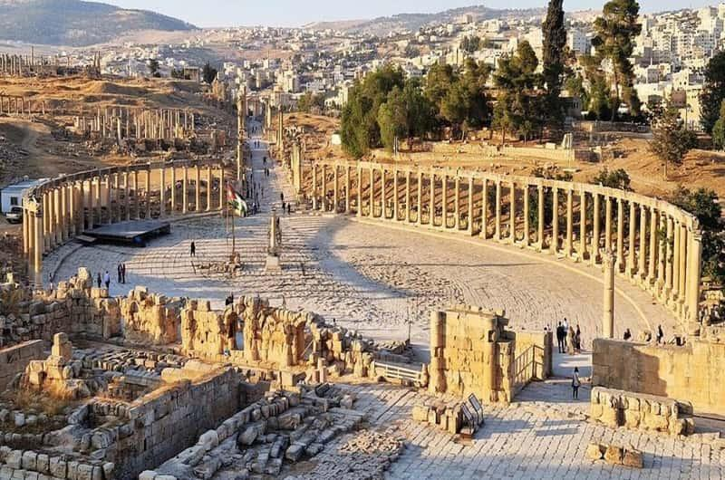

تُعد مدينة جرش من أهم المدن الأثرية في الأردن، وتقع في شمال المملكة. تشتهر بآثارها الرومانية القديمة وشوارعها الحجرية وأعمدتها الضخمة. وتضم المدينة العديد من المعالم التاريخية التي تعكس عظمة الحضارات القديمة، كما تُعتبر من أبرز الوجهات السياحية في الأردن.